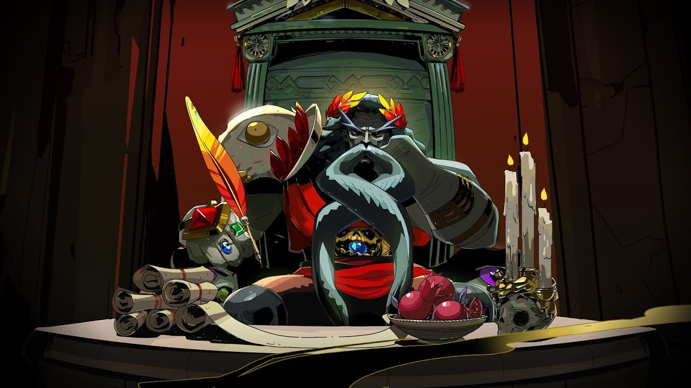

Games Fraser Played in 2020
Welcome to my list of games I played in 2022! This is the first one I ever did back on Twitter. Looking back on this in 2024 is funny because I didn't understand how much Slay the Spire would fucking take over my life over the next years.
Outer Wilds
I still think about this game. It was so much fun to explore this handcrafted solar system (!) while reading lore and dying in new and fantastic ways. If there was one game I wish I could play blind again it's this
Animal Crossing: New Horizons
This game is food for the soul. It will calm you down when you are feeling stressed and be there for you in hard times. I've loved this game since wild world so this new version was a dream come true
CrossCode
What a gorgeous action RPG! What I thought would be a 10 hour indie game ended up being one of the most compelling stories and settings I've ever seen. And that Soundtrack! And it was made in Germany!
Streets of Rage 4
Best soundtrack this year don't @ me. Seriously, stop looking at twitter and go play Streets of Rage. It's so much fun and such a cool game and the MUSIC
Hades
I rode the Hades wave this autumn and I loved it. This game has such a good presentation and is so accessible. Hard not to recommend this to anyone. Can't stand the americans putting on British accents though
Slay the Spire
Was convinced to give this a try by numerous friends who had lost hundreds of hours in this game. I can totally see why, this game can be played in a million different ways and is very addicting
One Step From Eden
This is a really cool indie title which has the same deckbuilding element as Slay the Spire, but it's an action game. I came for the music and I stayed for… the music. Soundtrack is a bop

NieR: Automata
Really enjoyed the aesthetic in this game. Everything looked so beautiful. Small things irritated me like you walk a bit and suddenly the forest turns into a desert.. And they make you look at 2B's ass the whole game
Final Fantasy VII
This January I played the OG FF7 and had a blast. It was slow but I pulled through, for cultural reasons. It's an amazing story and I wish I had played it as a child
Final Fantasy VII: Remake
I also figured why not play the remake too. I can totally see how people think it's amazing, especially if they've played the original, but the writing was really bad so I couldn't take it very seriously
The Witness
An environmental puzzle game on the PS4 which I got really into. The puzzles are always difficult but never impossible and the game comes with a cool message too
Factorio
BEWARE this game. It's extremely addicting, and for what? Endless progress. Seriously this game has no end. I've been playing multiplayer with 3 friends and we've gone for 8 hours at a time
Pikmin 3 Deluxe
I love the Pikmin series with all my heart so you KNOW I was double dipping for this one. The only reason this isn't in the #1 spot is because I've already played it all, and the new content is crap
Towerfall
I started playing this kick-ass indie fighter with my friends this summer and it's hilarious. Super good party game now that I'm too good at smash to play that with my friends
Paper Mario: The Origami King
As a fan of the originals I had some high hopes, but I was reminded that this game truly is for kids. I beat the game but I've probably outgrown it. It had some excellent highlights though
Super Mario 3D All-Stars
This game was a rip-off but I'm a nintendo slut and bought it anyway and really enjoyed playing all three games, although I was mainly just reminded of how good Odyssey is
Death Stranding
I just wanted to give it a try because I'd heard so much yet knew so little about it… I played about 15 hours but this game is not for the faint of heart like me. I was so terrified of those monsters that I couldn't play anymore
The Last of Us
I recognise that this is a great game but as someone who doesn't do well with either violence or suffering, I found it very upsetting. I did beat it though!
Horace
I've been playing this surprisingly deep (& very cheap) indie game. It's littered with references to pop culture and is very British, but I must be in the narrow target audience because I'm enjoying it
A Way Out
This is a silly co-op game about escaping prison that I enjoyed playing in the summer. There are absolutely no stakes, so failure doesn't mean anything. I guess it's more of a visual novel
Ori and the Blind Forest
This is the first of the games on this list that I describe as “beautiful for the sake of being beautiful”. They really put all their eggs into that basket. It looks alright, but the game isn't that good imo
Gris
Tbh I would buy prints of some screenshots of the later parts of this game and hang them in my apartment. But I find these kinds of games a little over the top
Journey
I blasted through this in an evening and it was alright. Again it's just soaked in imagery, but not actually making a point or leaving me with anything
To The Moon
This is a visual novel from 2011 that I tried out on a whim because it had a story that will make you cry. I love games like that but this one is a technical mess which stopped me from taking it seriously
Katamari Damacy: Reroll
A crazy japanese game about rolling up junk into a ball. I like the big dude who tells you to do stuff in the game but apart from that I was snoozing
Shadow of the Colossus (PS4)
I really tried with this game, I promise. But the empty walks to the titans, and then the weird formulaic way of defeating them?? Like each one has a little puzzle “how do I get on it” and then you're set. Couldn't finish it
God of War
2020 is the year that I learned that I don't like hack and slash games. I wanted to see Kratos' character development, but the game was too boring to get far enough. Also he's a ridiculous character
Dark Souls
For my own education I gave the original game a try but man this game is not for me. I need some colours and some recognisable characters. I didn't want to walk all the way back to the boss room each time I died
Unravel 2
Man this game is utter trash… combines the “beautiful for the sake of being beautiful” trope with bad gameplay. We couldn't stop ridiculing the game as we played it.